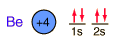

Beryllium
Beryllium is a light, silvery-white metal. It is used for making windows for x-ray tubes and radiation counters. X-rays readily penetrate materials of low atomic number, and beryllium metal has the best mechanical properties for the production of such windows.
Beryllium is also used in specialty alloys. About 2% of beryllium in copper produces a hard alloy used for making springs.
The principal ore of beryllium is beryl, Be3Al2(SiO3)6. Gem varieties of beryl include emerald, which is beryl with traces of chromium to contribute the green color. Aquamarine is also a bluegreen variety of beryl. Beryllium is found in the phosphate minerals Beryllonite and Herderite.
Beryllium forms the silicate phenakite, Be2SiO4.
Beryllium is also found in the silicate mineral Bertrandite. Other silicates of beryllium are helvite and milarite. It is found with yttrium in the silicate mineral gadolinite. Another silicate mineral of beryllium is euclase.
With aluminum, beryllium forms the oxide mineral Chrysoberyl. With boron, beryllium forms the oxide mineral Hambergite.
Compounds of beryllium are very poisonous - dust or powder from the metal or its oxides can cause serious illness.

|